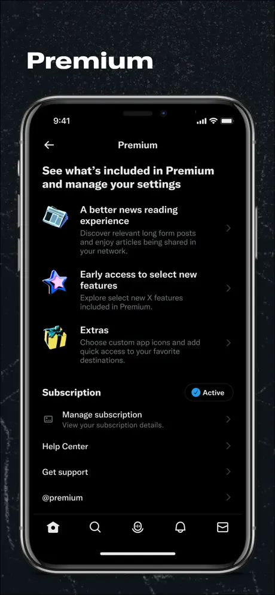
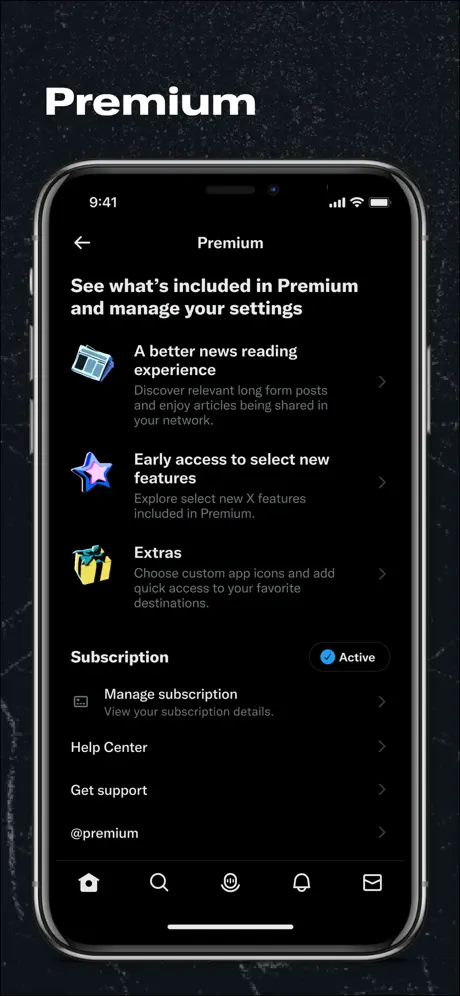
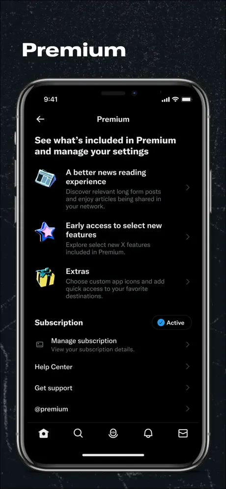

Rejoignez la conversation !

X est un réseau social populaire qui vous permet de partager des pensées, des nouvelles et des moments de votre vie en temps réel. Suivez vos intérêts, restez informé et rejoignez des conversations sur divers sujets.
X permet aux utilisateurs de partager leurs pensées, actualités et moments de vie en temps réel. Vous pouvez publier des tweets courts pour partager vos idées, suivre les actualités du monde entier et participer à des conversations en direct.
Vous pouvez suivre des comptes X qui vous intéressent, que ce soient des célébrités, des personnalités publiques, des marques ou des amis. Cela vous permet de rester informé des dernières actualités et des contenus qui vous intéressent.
Les hashtags permettent de regrouper des tweets sur des sujets spécifiques. Vous pouvez suivre les tendances pour découvrir les sujets populaires du moment et participer à des discussions en utilisant des hashtags pertinents.
X vous permet de mentionner d'autres utilisateurs dans vos tweets en utilisant "@" suivi de leur nom d'utilisateur. Vous pouvez également répondre aux tweets pour interagir avec d'autres utilisateurs et engager des conversations.
En plus du texte, X prend en charge le partage de photos, de vidéos et de gifs. Vous pouvez enrichir vos tweets avec des médias pour rendre votre contenu plus attractif et engageant.